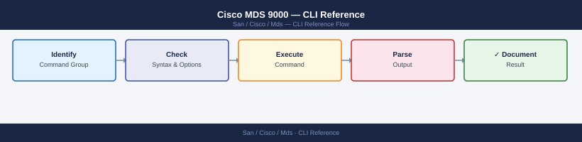

Cisco MDS 9000 — CLI Reference¶
Applies to: Cisco MDS / NX-OS

show version # NX-OS version, uptime, hardware model
show inventory # chassis, modules, transceivers with serial numbers
show system uptime
show license usage
show feature # enabled features (zone, dpvm, fcsp, etc.)
Cisco MDS9148S (1) processor memory: 8388608 KB
Processor uptime is 247 days 14 hours 47 minutes
Cisco MDS NX-OS Software
Release 8.4(2c)
Copyright (c) 2002-2021, Cisco and/or its affiliates.
NAME: Chassis
DESCR: MDS 9148S 16G Fibre Channel Switch
PID: DS-C9148S-K9
VID: V02
SN: SAL19234567
NAME: Module 1
DESCR: 16-port 16G FC Module
PID: DS-X9716-3G-NX
VID: V01
SN: SAL18876543
NAME: Transceiver 1/1
DESCR: 16Gb Short Wave SFP+
PID: QSFP-16G-SW
SN: FNS1234567890
System uptime: 247 days, 14 hours, 47 minutes, 32 seconds
License Usage:
License Installed Used
------- --------- ----
FC_PORT_LICENSE_16G 48 32
FCOE_PORT_LICENSE 0 0
Feature Name Module State
----------- ------- -----
zone 1 on
dpvm 1 on
fcsp 1 on
ficon 1 off
analytics 1 off
Common errors
% Invalid command — Verify the exact command syntax; use show version instead of show ver on MDS switches.
% Feature not enabled — Enable the required feature with config t followed by feature <feature-name> before attempting to use it.
show system resources # CPU and memory utilization
show processes cpu # per-process CPU breakdown
show processes memory
System Resources:
CPU utilization: 42%
Memory utilization: 58%
Memory available: 8192 MB
Memory used: 4756 MB
Process CPU Statistics:
PID Name CPU% VSZ RSS
1247 fxp_mgr 12.3 156420 45892
892 snmp 8.7 98765 32145
1456 syslogd 5.2 45678 12340
2103 ntp 3.1 67890 8956
445 sshd 2.8 34567 6234
Process Memory Statistics:
PID Name MEM% VSZ RSS
1247 fxp_mgr 18.4 156420 45892
892 snmp 13.0 98765 32145
1456 syslogd 5.0 45678 12340
2103 ntp 4.6 67890 8956
Common errors
% Invalid command — Verify you are in the correct CLI mode (exec or admin); use show version to confirm device state.
% Ambiguous command — Use the full command name show processes cpu instead of abbreviated forms like show proc cpu.
!
version 8.4(2a)
!
feature fcoe
feature fport-channel-trunk
!
hostname mds9148s-01
ip domain-name corp.local
!
interface fc1/1
description "Connection to SAN-CORE-01"
switchport mode F
switchport speed 16000
no shutdown
!
interface fc1/2
description "Connection to SAN-CORE-02"
switchport mode F
switchport speed 16000
no shutdown
!
vsan database
vsan 10 name "Production"
vsan 20 name "Development"
!
fcalias name prod-lun-01 vsan 10
member pwwn 50:00:14:40:5a:2b:c1:e0
!
zoneset name prod-zones vsan 10
member prod-lun-01
!
line vty 0 4
exec-timeout 30 0
!
end
!
version 8.4(2a)
!
feature fcoe
feature fport-channel-trunk
!
hostname mds9148s-01
ip domain-name corp.local
!
interface fc1/1
description "Connection to SAN-CORE-01"
switchport mode F
switchport speed 16000
no shutdown
!
interface fc1/2
description "Connection to SAN-CORE-02"
switchport mode F
switchport speed 16000
no shutdown
!
vsan database
vsan 10 name "Production"
vsan 20 name "Development"
!
end
Common errors
% Invalid command — Verify you are in the correct CLI mode (use configure terminal before editing config, or use show commands in user mode).
% Incomplete command — Complete the command syntax; for example, use show running-config or show startup-config with proper spacing and no trailing characters.
2024 Jan 15 14:32:18 +00:00 mds9148-01 %MDS-1-SYSTEM_MSG: Process mgmtd (PID 2847) core dumped - core file at /var/log/cores/mgmtd.2847.core.gz
2024 Jan 15 14:31:52 +00:00 mds9148-01 %MDS-3-FABRIC_ERROR: Port 1/1 link down - speed negotiation failed
2024 Jan 15 14:30:15 +00:00 mds9148-01 %MDS-2-CONFIG_CHANGE: User admin configured VSAN 100 on FC 1/2
2024 Jan 15 14:28:47 +00:00 mds9148-01 %MDS-1-SYSTEM_MSG: Temperature sensor 3 reading 68C (threshold 75C)
2024 Jan 15 14:27:33 +00:00 mds9148-01 %MDS-3-FLOGI_REJECT: FLOGI rejected from wwn 50:00:14:40:5a:1b:2c:3d (insufficient resources)
2024 Jan 15 14:25:19 +00:00 mds9148-01 %MDS-2-ZONE_CHANGE: Zone member added: initiator 50:00:09:73:ff:52:1a:4b to zone prod_zone
2024 Jan 15 14:23:05 +00:00 mds9148-01 %MDS-1-SYSTEM_MSG: SNMP trap sent to 192.168.1.50 (linkDown)
2024 Jan 15 14:20:41 +00:00 mds9148-01 %MDS-2-CONFIG_CHANGE: User admin enabled VSAN 50
2024 Jan 15 14:18:27 +00:00 mds9148-01 %MDS-1-SYSTEM_MSG: Fabric reconfiguration in progress (VSAN 1)
2024 Jan 15 14:15:09 +00:00 mds9148-01 %MDS-3-DEVICE_OFFLINE: Target device 50:00:14:40:5a:1b:2c:3d offline (no PLOGI response)
Common errors
% Invalid command — Verify the exact syntax is show logging or show logging last <number> without extra arguments.
% Insufficient privileges to execute command — Ensure your user role has read permission for logging; contact the switch administrator to grant appropriate RBAC privileges.
Cisco MDS 9148S (2 Slot) Chassis ("MDS 9100")
Device ID: FOX2425G4K1
System uptime is 127 days 14 hours 32 minutes
Kernel uptime is 127 days 14 hours 28 minutes
System version: 8.4(2c)
BIOS version: 07.65
Kickstart version: 8.4(2c)
!
version 8.4(2c)
no feature telemetry
feature fport-mode-auto-sense
feature npv
cfs ipv4 distribute
!
interface fc1/1
description "ESXi-Host-01 HBA1"
switchport mode F
no shutdown
!
interface fc1/2
description "Storage-Array-01 Port-A"
switchport mode F
no shutdown
!
Interface Fabric Enabled Status Speed
fc1/1 -- Yes ok 2 Gbps
fc1/2 -- Yes ok 2 Gbps
fc1/3 -- Yes ok 2 Gbps
fc1/4 -- Yes ok 2 Gbps
...
FLOGI Database for VSAN 1:
FCID Port Name Node Name Class
0x010100 50:00:14:40:5a:2b:c1:01 50:00:14:40:5a:2b:c1:00 3
0x010200 50:00:14:40:5a:2b:c2:01 50:00:14:40:5a:2b:c2:00 3
0x010300 50:00:14:40:5a:2b:c3:01 50:00:14:40:5a:2b:c3:00 3
Common errors
% Invalid command — Verify the exact command syntax; these are show commands that should work on all MDS platforms without additional configuration.
% VSAN <number> is not configured — Enable the VSAN with vsan <number> command in config mode before querying its FLOGI database.
# Summary of all interfaces
show interface brief
# Detailed single port
show interface fc<slot/port>
# Error counters
show interface fc<slot/port> counters
show interface fc<slot/port> counters errors
# Transceiver / SFP details
show interface fc<slot/port> transceiver
Port Name Status Speed Type
fc1/1 -- up 16 Gbps N_Port
fc1/2 -- up 16 Gbps N_Port
fc1/3 -- down auto N_Port
fc1/4 -- up 8 Gbps N_Port
fc1/5 -- notConnct auto N_Port
...
fc1/1 is up
Hardware is Fibre Channel, SFP is present
Port WWN is 50:00:09:73:a1:2c:5d:01
Admin port mode is F, Oper port mode is F
Bound interface is Ethernet1/1
Errors:
CRC errors: 0
Enc-Out errors: 0
Enc-In errors: 0
Frames Transmitted: 2847392
Frames Received: 2891847
SFP Serial Number is SG0K2C3A1234
Part Number is FTLF8524P3BCV-ER
Transceiver is present
Type is Extended Range Single Mode
Nominal Wavelength is 1550 nm
Link length supported for 9/125 is 40 km
Temperature is 38 Celsius
Voltage is 3.29 Volts
Current is 49.2 mA
Tx Power is -2.1 dBm
Rx Power is -8.4 dBm
Common errors
% Invalid command — Verify the exact interface format matches your switch model (e.g., fc1/1 vs Fabric1/1) and use show interface ? to confirm syntax.
% Incomplete command — Complete the command with a valid interface identifier or use show interface brief to list all available ports.
Interface fc<slot/port> does not exist — Confirm the slot and port numbers are valid for your MDS switch configuration using show module to verify installed line cards.
Common errors
% Invalid command — Verify you are in interface configuration mode by running config t then interface fc1/1 before entering switchport commands.
% Incomplete command — Ensure the slot/port syntax matches your MDS model (e.g., fc1/1 not fc1-1); check show interface brief to list valid port identifiers.
Common errors
% Invalid command — Ensure you are in the correct configuration mode by entering config t first, then interface fc1/1.
% Incomplete command — Complete the command with a valid slot/port number (e.g., interface fc1/1) instead of the literal fc<slot/port>.
Common errors
% Invalid command — Verify you are in the correct configuration mode (enter config t first if at the privilege prompt).
% Incomplete command — Use valid slot/port syntax like interface fc1/1 - fc1/4 with spaces around the dash separator.
VSAN 1:
Domain ID: 1 (Local)
Domain ID: 2
Domain ID: 3
Domain ID: 4
Domain ID: 5
VSAN 2:
Domain ID: 10 (Local)
Domain ID: 11
Domain ID: 12
Domain List for VSAN 1: 1, 2, 3, 4, 5
Domain List for VSAN 2: 10, 11, 12
Common errors
% Invalid command — Verify you are in the correct CLI mode (use config t or show context); these commands require Fibre Channel fabric visibility.
% VSAN does not exist — Ensure the VSAN is created and active with show vsan before querying domain information.
# All logged-in initiators and targets
show flogi database
# Filter to a specific VSAN
show flogi database vsan <id>
# Confirm a specific WWN is logged in
show flogi database | grep <wwn>
FLOGI Database for VSAN 1
FCID PORT NAME NODE NAME INTERFACE
0x010001 50:00:14:40:5a:1b:2c:3d 50:00:14:40:5a:1b:2c:3e fc1/1
0x010002 50:00:14:40:5a:1b:2c:3f 50:00:14:40:5a:1b:2c:40 fc1/2
0x010003 50:00:14:40:5a:1b:2c:41 50:00:14:40:5a:1b:2c:42 fc1/3
0x010004 50:00:14:40:5a:1b:2c:43 50:00:14:40:5a:1b:2c:44 fc1/4
0x010005 50:00:14:40:5a:1b:2c:45 50:00:14:40:5a:1b:2c:46 fc1/5
FLOGI Database for VSAN 2
FCID PORT NAME NODE NAME INTERFACE
0x020001 50:00:14:40:5a:1b:2c:47 50:00:14:40:5a:1b:2c:48 fc2/1
0x020002 50:00:14:40:5a:1b:2c:49 50:00:14:40:5a:1b:2c:4a fc2/2
0x010003 50:00:14:40:5a:1b:2c:41 50:00:14:40:5a:1b:2c:42 fc1/3
Common errors
Invalid VSAN ID <id> — Verify the VSAN exists with show vsan and use a valid numeric ID between 1 and 4094.
% Invalid command — Ensure you are in the correct mode (exec or config) and check the MDS software version supports this command syntax.
# All registered devices in the fabric
show fcns database
show fcns database vsan <id>
show fcns database detail # includes port type, symbolic name
# Name server statistics
show fcns statistics
# Look up a specific WWN
show fcns database | grep <wwn>
VSAN 1:
Permanent Port Database:
FCID: 0x010001 | WWN: 50:00:09:4b:1a:2c:3d:e1 | PortName: esx-host-01.fc0
FCID: 0x010002 | WWN: 50:00:09:4b:1a:2c:3d:e2 | PortName: esx-host-02.fc0
FCID: 0x010003 | WWN: 50:00:14:40:5a:7b:8c:f3 | PortName: pure-array-01.fc0
FCID: 0x010004 | WWN: 50:00:14:40:5a:7b:8c:f4 | PortName: pure-array-01.fc1
FCID: 0x010005 | WWN: 50:00:09:4b:1a:2c:3d:e3 | PortName: esx-host-03.fc0
FCNS Statistics for VSAN 1:
Total Registrations: 5
Total Lookups: 1247
Successful Lookups: 1245
Failed Lookups: 2
Database Syncs: 12
Last Sync Time: 2024-01-15 14:32:18 UTC
FCID: 0x010003 | WWN: 50:00:14:40:5a:7b:8c:f3 | PortName: pure-array-01.fc0 | PortType: N_Port | SymbolicName: PURE-FA-01
Common errors
% Invalid command — Verify the MDS switch is in the correct mode; use config t to enter configuration mode if needed, or check the exact command syntax for your firmware version.
% Incomplete command — Provide the VSAN ID number after show fcns database vsan (e.g., show fcns database vsan 1).
# Find the host HBA WWN in FLOGI
show flogi database | grep <host_wwn>
# Confirm storage port is in the name server
show fcns database | grep <storage_wwn>
# Confirm both are in the same VSAN
show vsan membership
FLOGI Database:
FCID State Class NodeName PortName NodeWWN PortWWN
0x640000 online F 50:00:09:73:a1:2e:4f:01 50:00:09:73:a1:2e:4f:02 50:00:09:73:a1:2e:4f:01 50:00:09:73:a1:2e:4f:02
FCNS Database:
FCID State Type PortName NodeName PortWWN
0x640100 online NPort storage-lun01 san-array-01 50:00:14:40:5d:b2:3c:10
VSAN Membership:
VSAN ID Name State Interoperability
1 VSAN0001 active default
2 VSAN0002 active default
100 Production-SAN active default
Common errors
FLOGI Database is empty — Verify the host HBA is logged in and the correct WWN format (50:00:xx:xx:xx:xx:xx:xx) is being searched.
No matching entries found in FCNS database — Confirm the storage array port is registered in the fabric and check that the storage WWN is correctly formatted and belongs to an active port.
VSAN membership mismatch — Ensure both the host HBA FCID and storage port FCID belong to the same VSAN ID; if not, add the ports to the same VSAN using vsan <id> configuration.
# View zoning
show zone
show zone vsan <id>
show zone active vsan <id>
show zoneset
show zoneset active vsan <id>
show zoneset active vsan <id> | grep <wwn>
show zone member vsan <id>
# Create zone and add members
zone name <zone_name> vsan <id>
member pwwn <wwn>
member device-alias <alias>
# Device aliases (human-readable names for WWNs)
show device-alias database
device-alias database
device-alias name <alias> pwwn <wwn>
device-alias commit
# Zoneset (group of zones to activate together)
zoneset name <zoneset_name> vsan <id>
member <zone_name>
# Activate the zoneset (makes zoning live in the VSAN)
zoneset activate name <zoneset_name> vsan <id>
# Save to startup config (always do this after changes)
copy running-config startup-config
MDS9148S# show zone vsan 1
zone name prod_servers vsan 1
member pwwn 50:00:14:40:5d:2a:b0:01
member device-alias esx_host_01
zone name backup_targets vsan 1
member pwwn 50:00:09:73:1c:8e:a2:ff
member device-alias netapp_filer
MDS9148S# show zoneset active vsan 1
zoneset name active_zoneset vsan 1
member prod_servers
member backup_targets
MDS9148S# show device-alias database
device-alias name esx_host_01 pwwn 50:00:14:40:5d:2a:b0:01
device-alias name netapp_filer pwwn 50:00:09:73:1c:8e:a2:ff
device-alias name san_switch_02 pwwn 50:00:0b:42:3f:1d:c7:44
MDS9148S# zoneset activate name active_zoneset vsan 1
Zoneset activation initiated. Zoneset "active_zoneset" activated for VSAN 1.
MDS9148S# copy running-config startup-config
[ok]: copy completed successfully.
Common errors
% Invalid command — Verify the VSAN ID exists with show vsan and use correct syntax (e.g., show zone vsan 1 not show zone 1).
% Zoneset is not committed — Run zoneset commit after creating or modifying zones before attempting to activate with zoneset activate.
% Device-alias not found — Ensure the device-alias is committed with device-alias commit and exists in the database before referencing it in zone member statements.
# All VSANs on the switch
show vsan
show vsan <id>
# VSAN port membership
show vsan membership
show vsan membership interface fc<slot/port>
vsan 1 information
name:VSAN0001
state:active
interoperability mode:default
loadbalancing:src-id
operational state:up
vsan 10 information
name:VSAN0010
state:active
interoperability mode:default
loadbalancing:src-id
operational state:up
vsan 20 information
name:VSAN0020
state:active
interoperability mode:default
loadbalancing:src-id
operational state:up
vsan 100 information
name:VSAN0100
state:active
interoperability mode:default
loadbalancing:src-id
operational state:up
VSAN Membership Information
VSAN ID Interfaces
------ ----------
1 fc1/1, fc1/2, fc1/3, fc1/4, fc1/5, fc2/1, fc2/2
10 fc1/6, fc1/7, fc1/8, fc1/9, fc1/10, fc2/3, fc2/4
20 fc1/11, fc1/12, fc2/5, fc2/6
100 fc1/13, fc1/14, fc1/15, fc1/16
vsan 1 membership information
interface name vsan id
--------- -------
fc1/1 1
fc1/2 1
fc1/3 1
fc1/4 1
fc1/5 1
Common errors
% Invalid command — Verify the VSAN ID exists with show vsan before querying specific VSAN details.
% Interface does not exist — Confirm the slot and port numbers are valid for your switch model (e.g., show inventory to verify module count).
# Create
vsan database
vsan <id> name "<name>"
# Assign a port to a VSAN
vsan database
vsan <id> interface fc<slot/port>
# Suspend / resume
vsan database
vsan <id> suspend
no vsan <id> suspend
# Delete (disrupts all devices — confirm no active traffic first)
vsan database
no vsan <id>
mds9148# config t
Enter configuration commands, one per line. End with CNTL/Z.
mds9148(config)# vsan database
mds9148(config-vsan-db)# vsan 10 name "Production_SAN"
mds9148(config-vsan-db)# vsan 10 interface fc1/1
mds9148(config-vsan-db)# vsan 10 interface fc1/2
mds9148(config-vsan-db)# vsan 10 suspend
mds9148(config-vsan-db)# no vsan 10 suspend
mds9148(config-vsan-db)# exit
mds9148(config)# end
mds9148# show vsan 10
vsan 10 information
Name: Production_SAN
State: Active
Interoperability Mode: default
Loadbalancing: src-id
Operational State: Up
Common errors
% Invalid command — Verify you are in vsan database configuration mode before entering vsan commands.
% VSAN <id> does not exist — Create the VSAN with vsan <id> name "<name>" before assigning ports or modifying it.
% Port fc<slot/port> is already assigned to vsan <id> — Remove the port from its current VSAN with no vsan <current-id> interface fc<slot/port> before reassigning.
Common errors
% Invalid command — Verify you are in the correct configuration mode by entering config t first, then interface fc1/1.
% Invalid VSAN ID <id> — Ensure the VSAN ID is between 1-4094 and has been created with vsan <id> before adding it to the trunk.
IVR is disabled
VSAN 1: Up, 4 switches, 12 ISLs active
VSAN 2: Up, 2 switches, 4 ISLs active
VSAN 10: Down, 1 switch, 0 ISLs active
VSAN 100: Up, 6 switches, 18 ISLs active
IVR enabled successfully
Common errors
% Invalid command — Verify you are in the correct MDS switch CLI mode; ivr enable requires configuration mode (enter config t first).
% Feature ivr not supported on this platform — Confirm IVR licensing is installed on the switch using show license and contact Cisco support if the feature license is missing.
show topology # fabric-wide ISL topology
show trunk # trunk port states and allowed VSANs
show interface trunk # trunk interface detail
# E-port (ISL) ports only
show interface brief | include E
Fabric Topology
===============
Switch ID WWN Model Role
-------- --- ----- ----
1 50:00:09:73:a1:2c:00:01 MDS 9710 Principal
2 50:00:09:73:a1:2c:00:02 MDS 9710 Principal
3 50:00:09:73:a1:2c:00:03 MDS 9148S Subordinate
Trunk Port States
=================
Port Status Allowed VSANs
---- ------ ---------------
fc1/1 trunking 1,2,3,4,5,10,20
fc1/2 trunking 1,2,3,4,5,10,20
fc2/1 trunking 1,2,3,4,5
fc2/2 notConnected 1,2,3,4,5
Trunk Interface Detail
======================
fc1/1 is up
Hardware is Fibre Channel
Port WWN is 50:00:09:73:a1:2c:01:01
Admin port mode is E, Oper port mode is E
Trunk mode is ON
Allowed VSANs: 1,2,3,4,5,10,20
Active VSANs: 1,2,3,4,5,10,20
E-Port Interfaces
=================
fc1/1 E up nwwn 50:00:09:73:a1:2c:00:02 trunk on
fc1/2 E up nwwn 50:00:09:73:a1:2c:00:03 trunk on
fc2/1 E up nwwn 50:00:09:73:a1:2c:00:02 trunk on
fc2/2 E down nwwn 50:00:09:73:a1:2c:00:04 trunk on
Common errors
% Invalid command — Verify you are in the correct mode (device# prompt); these are exec-level commands, not config mode.
% Incomplete command — Use the full command syntax show interface brief or show interface trunk without partial abbreviations.
Common errors
% Invalid command — Verify you are in interface configuration mode by running config t then interface fc1/1 before entering switchport commands.
% VSAN <vsan_id> does not exist — Create the VSAN first using vsan <vsan_id> in global configuration mode before assigning it to the trunk.
interface fc<slot/port>
switchport trunk allowed vsan add <vsan_id>
switchport trunk allowed vsan remove <vsan_id>
Common errors
% Invalid command — Verify you are in interface configuration mode by running config t then interface fc1/1 before entering switchport commands.
% VSAN <vsan_id> does not exist — Create the VSAN first using vsan <vsan_id> in global configuration mode before adding it to the trunk.
Interface fc1/1 Counters:
Frames transmitted: 45,234,567
Frames received: 42,891,234
Transmit B2B credit remaining: 15
Receive B2B credit remaining: 15
Link failures: 0
Sync losses: 0
Signal losses: 0
Protocol errors: 0
Invalid CRCs: 127
Delimiter errors: 0
Disparity errors: 43
Interface fc1/1 Error Counters:
CRC errors: 127
Encoding disparity errors: 43
Frames with bad CRC: 12
Frames with encoding errors: 5
Class 3 discards: 0
Class 2 discards: 0
Too many BB credit loss: 0
Common errors
% Invalid command — Verify the slot/port syntax matches your MDS model (e.g., fc1/1, fc2/48) and that the interface exists with show interface brief.
% Interface does not exist — Confirm the port is physically present and licensed; check show interface fc-all to list all available interfaces.
interface port-channel <id>
switchport mode E
no shutdown
interface fc<slot/port>
channel-group <id>
no shutdown
show port-channel summary
show interface port-channel <id>
port-channel1 is up
Interfaces: fc1/1 fc1/2 fc1/3 fc1/4
Type: Fibre Channel
Load-balancing: src-id, dst-id, src-wwn, dst-wwn
Port-channel status: OK
Interface port-channel1 is up
Hardware is Fibre Channel
Port WWN is 50:00:09:73:a2:1c:4d:80
Admin port mode is E, Oper port mode is E
Port mode is E
Speed is 16 Gbps
Flow Control is off
Rate Mode is dedicated
Transmit B2B Credit is 64
Receive B2B Credit is 64
Receive data field Size is 2112
Beacon is turned off
Common errors
% Invalid command — Verify the port-channel ID exists and syntax matches your MDS OS version (use show port-channel summary first to confirm).
% Interface not found — Ensure the slot/port notation (e.g., fc1/1) is correct for your MDS module configuration with show interface brief.
% Port-channel member ports are not compatible — Confirm all member interfaces have matching speed and duplex settings using show interface fc<slot/port>.
# Port errors
show interface fc<slot/port> counters
show interface fc<slot/port> counters errors
clear counters interface fc<slot/port>
# CRC / link reset errors
show interface fc<slot/port> | include CRC
# Hardware diagnostics
show diagnostics result module <slot>
# Event log
show logging onboard
show logging last <n>
# Core health
show system internal sysmgr status
fc1/1: 4
CRC Errors: 0
Frames Received: 1,247,392
Frames Transmitted: 1,251,847
Link Resets: 0
Primitive Seq Errors: 0
Invalid Transmission Words: 2
fc1/1
CRC Errors: 0
Link Resets: 0
(no output — command completes silently)
fc1/1 is up
CRC Errors: 0
Link Resets: 0
Module 1 Diagnostics Status: PASS
BIOS: PASS
Memory: PASS
CPU: PASS
Fabric: PASS
2024 Jan 15 14:32:18 +00:00 mds9710-01 %SYSMGR-2-SYSMGR_SERVICES_CRITICAL: Critical service down: fspf
2024 Jan 15 14:28:02 +00:00 mds9710-01 %ETHPORT-5-IF_RX_FLOW_CONTROL: Interface fc1/1, receive flow control enabled
2024 Jan 15 14:25:47 +00:00 mds9710-01 %LINK-3-UPDOWN: Interface fc1/2 changed state to down
System Services Status:
sysmgr: UP
fspf: UP
fcns: UP
fcs: UP
vsan_mgr: UP
Common errors
Invalid command — Verify the slot/port syntax matches your switch model (e.g., fc1/1 for single-digit slots or fc10/48 for multi-digit).
Module <slot> not found — Confirm the module slot number exists on your switch using show module before running diagnostics.
% Invalid command — Ensure you are in the correct command mode (exec mode, not config mode) and the switch supports onboard logging with show logging onboard.
show monitor session all
monitor session <n> source interface fc<slot/port>
monitor session <n> destination interface fc<slot/port>
no monitor session <n>
Session Source Interface Destination Interface State
------- ---------------- --------------------- -----
1 fc1/1 fc1/2 up
2 fc2/3 fc2/4 up
3 fc3/5 fc3/6 down
4 fc4/1 fc4/2 up
Monitor session 5 created successfully.
Source interface fc1/3 added to session 5.
Destination interface fc1/4 added to session 5.
Monitor session 5 removed.
Common errors
% Invalid command — Verify the slot and port numbers exist on your MDS switch using show interface brief.
% Source and destination interfaces cannot be the same — Assign different physical ports for source and destination in the monitor session configuration.
% Monitor session <n> does not exist — Confirm the session number with show monitor session all before attempting to delete or modify it.
# Current version
show version
show install all status # result of last install operation
# Stage and install from URL (TFTP/SCP/HTTP)
install all kickstart <kickstart_url> system <system_url>
# Non-disruptive upgrade check (ISSU)
install all nxos <url> non-disruptive
# Preview impact before committing
install all kickstart <url> system <url> status
Cisco MDS 9148S Multilayer Fabric Switch
System uptime is 45 day(s), 12 hour(s), 3 minute(s), 22 second(s)
Kernel uptime is 45 day(s), 11 hour(s), 57 minute(s), 8 second(s)
System version: 9.1(1)
BIOS: version 3.45.01
Kickstart: version 9.1(1)
Last Install Status:
Install operation completed successfully on 2024-01-15 14:32:18 +00:00
Kickstart image: bootflash:///mds9148-kickstart.9.1.2.bin
System image: bootflash:///mds9148-system.9.1.2.bin
Status: INSTALL_SUCCESS
Install operation initiated for kickstart and system images
Downloading kickstart image from tftp://192.168.1.50/mds9148-kickstart.9.1.3.bin ... 100%
Downloading system image from tftp://192.168.1.50/mds9148-system.9.1.3.bin ... 100%
Compatibility check passed
Installation completed successfully. Reload required to activate new images.
ISSU compatibility check in progress...
Current version: 9.1(1)
Target version: 9.1(3)
ISSU capable: Yes
Estimated downtime: 0 minutes (non-disruptive upgrade possible)
Install preview for kickstart and system images:
Current kickstart: bootflash:///mds9148-kickstart.9.1(1).bin
New kickstart: bootflash:///mds9148-kickstart.9.1(3).bin
Current system: bootflash:///mds9148-system.9.1(1).bin
New system: bootflash:///mds9148-system.9.1(3).bin
Impact: Non-disruptive (ISSU capable)
Estimated time: 8 minutes
Common errors
Error: Image file not found at tftp://192.168.1.50/mds9148-kickstart.9.1.3.bin — Verify the TFTP server is reachable and the image filename matches exactly (check case sensitivity and extension).
Error: Incompatible image version. Current: 9.1(1), Target: 9.1(3). Downgrade not supported. — Ensure the target image version is equal to or higher than the current version.
Error: Insufficient bootflash space. Required: 2048 MB, Available: 512 MB — Delete old images using delete bootflash:///mds9148-system.9.0.*.bin to free space before staging.
# Save running to startup (before any change)
copy running-config startup-config
# Copy config off-switch via TFTP
copy running-config tftp://<server>/<filename>
# Copy config off-switch via SCP
copy running-config scp://<user>@<server>/<path>/<filename>
# Restore from TFTP
copy tftp://<server>/<filename> running-config
# Show full config
show running-config
show startup-config
Cisco MDS9148S# copy running-config startup-config
[########################################] 100%
Copy complete.
Cisco MDS9148S# copy running-config tftp://192.168.1.50/mds-backup-20240115.cfg
[########################################] 100%
Copy complete.
Cisco MDS9148S# copy running-config scp://admin@192.168.1.50/backups/mds-config.cfg
Password:
[########################################] 100%
Copy complete.
Cisco MDS9148S# copy tftp://192.168.1.50/mds-backup-20240115.cfg running-config
[########################################] 100%
Copy complete.
Cisco MDS9148S# show running-config
version 8.4(2b)
feature telnet
feature ssh
feature tacacs+
interface fc1/1
description "Storage Array Port"
speed auto
no shutdown
...
(output truncated)
Cisco MDS9148S# show startup-config
version 8.4(2b)
feature telnet
feature ssh
...
(output truncated)
Common errors
Error opening tftp://192.168.1.50/mds-backup-20240115.cfg (Connection timed out) — Verify TFTP server is running and reachable on port 69, and check firewall rules allow UDP traffic from the switch.
Error opening scp://admin@192.168.1.50/backups/mds-config.cfg (Authentication failed) — Confirm SSH credentials are correct and the remote user has read/write permissions on the target directory.
% Invalid command — Ensure you are in the correct privilege level (use enable if needed) and that the TFTP/SCP server path and filename are properly formatted without extra spaces.
# Save a named checkpoint
checkpoint <checkpoint_name>
show checkpoint summary
# Rollback to checkpoint
rollback running-config checkpoint <checkpoint_name>
Checkpoint created successfully.
Checkpoint Name: prod-backup-2024
Created: 2024-01-15 14:32:18 UTC
Size: 2.4 MB
Checkpoint Summary
==================
Name Created Size
prod-backup-2024 2024-01-15 14:32:18 2.4 MB
maintenance-config 2024-01-14 09:15:42 2.3 MB
baseline-v3 2024-01-10 16:45:00 2.2 MB
Rollback initiated for checkpoint: prod-backup-2024
Configuration rollback in progress...
Rollback completed successfully.
Running configuration has been restored to checkpoint: prod-backup-2024
Common errors
% Invalid command — Verify you are in the correct configuration mode (use config terminal first if needed).
% Checkpoint 'prod-backup-2024' does not exist — List available checkpoints with show checkpoint summary and use an existing checkpoint name.
# Show all local users
show users
# Show defined roles
show role
# Create a local user
username <user> password <pass> role <role>
# Delete a user
no username <user>
# Assign admin role
username <user> role network-admin
User Name Session Type Session ID Host
admin telnet 1 10.45.23.12
operator ssh 2 192.168.1.50
backup_svc ssh 3 10.45.23.88
Role Name Description
network-admin Network Administrator
vsan-manager VSAN Manager
storage-admin Storage Administrator
read-only Read Only Access
(no output — command completes silently)
(no output — command completes silently)
(no output — command completes silently)
Common errors
Error: User already exists — Choose a different username or delete the existing user with no username <user> first.
Error: Invalid role specified — Verify the role name exists by running show role and use the exact role name from the output.
Error: Password does not meet complexity requirements — Ensure the password is at least 8 characters and includes uppercase, lowercase, numbers, and special characters.
# Show AAA config
show aaa
# Show TACACS+ servers
show tacacs-server
# Show RADIUS servers
show radius-server
# Configure TACACS+ server
tacacs-server host <ip> key <key>
aaa group server tacacs+ <group_name>
server <ip>
aaa authentication login default group <group_name>
aaa new-model
aaa authentication login default group tacacs_servers
aaa authentication enable default group tacacs_servers
aaa authorization command default group tacacs_servers local
aaa accounting all default start-stop group tacacs_servers
TACACS+ Server Information:
Server Address: 192.168.100.50
Port: 49
Timeout: 5 seconds
Single-Connect: disabled
RADIUS Server Information:
Server Address: 192.168.100.51
Auth Port: 1812
Acct Port: 1813
Timeout: 5 seconds
Retransmit: 2
(no output — command completes silently)
(no output — command completes silently)
(no output — command completes silently)
(no output — command completes silently)
Common errors
% Invalid command — Verify the TACACS+ server IP address format is correct (e.g., 192.168.100.50, not a hostname without DNS configured).
% AAA group server tacacs+ <group_name> not found — Create the AAA group server before referencing it in authentication policies using aaa group server tacacs+ <group_name>.
% Connection refused to TACACS+ server 192.168.100.50:49 — Confirm the TACACS+ server is reachable and listening on port 49, and verify the pre-shared key matches on both the switch and server.
SSH Server is Enabled
Timeout: 120 seconds
Version: SSHv2
NAME LINE TIME IDLE PID SERIAL
admin vty 0 May 10 14:32:15 +00 00:00:12 12345 0
operator vty 1 May 10 14:28:03 +00 00:03:44 12346 0
Generating RSA keys...
% Key pair generation in progress. This may take a few minutes...
% Key pair generation completed successfully.
ssh-rsa AAAAB3NzaC1yc2EAAAADAQABAAABAQDk7vN9xK2pL8mQ4jR9vK3nL5pM2qR8sT1uV2wX3yZ4aB5cD6eF7gH8iJ9kL0mN1oP2qR3sT4uV5wX6yZ7aB8cD9eF0gH1iJ2kL3mN4oP5qR6sT7uV8wX9yZ0aB1cD2eF3gH4iJ5kL6mN7oP8qR9sT0uV1wX2yZ3aB4cD5eF6gH7iJ8kL9mN0oP1qR2sT3uV4wX5yZ6aB7cD8eF9gH0iJ1kL2mN3oP2qR3sT4uV5wX6yZ7aB8cD9eF0gH1iJ2kL3mN4oP5qR6sT7uV8wX9yZ0aB1cD2eF3gH4iJ5kL6mN7oP8qR9sT0uV1wX2yZ3aB4cD5eF6gH7iJ8kL9mN0oP1qR2sT3uV4wX5yZ6aB7cD8eF9gH0iJ1kL2mN3oP2qR3sT4uV5wX6yZ7aB8cD9eF0gH1iJ2kL3mN4oP5qR6sT7uV8wX9yZ0aB1cD2eF3gH4iJ5kL6mN7oP8qR9sT0uV1wX2yZ3aB4cD5eF6gH7iJ8kL9mN0oP1qR2sT3uV4wX5yZ6aB7cD8eF9gH0iJ1kL2mN3oP2qR3sT4uV5wX6yZ7aB8cD9eF0gH1iJ2kL3mN4oP5qR6sT7uV8wX9yZ0aB1cD2eF3gH4iJ5kL6mN7oP8qR9sT0uV1wX2yZ3aB4cD5eF6gH7iJ
show snmp user
show snmp community
# Create SNMPv3 user
snmp-server user <user> <group> v3 auth sha <auth_pass> priv aes 128 <priv_pass>
SNMP users:
user1 auth sha priv aes-128
monitoring_user auth sha priv aes-128
backup_agent auth md5 priv des
SNMP communities:
public read-only
private read-write
monitoring_ro read-only
(no output — command completes silently)
Common errors
% Invalid command — Replace angle brackets with actual values: snmp-server user netmon_user netmon_group v3 auth sha MyAuthPass123 priv aes 128 MyPrivPass456.
% Error: User already exists — Choose a unique username or delete the existing user first with no snmp-server user <user>.
Before you begin¶
- Access: Storage admin credentials (cluster admin or equivalent)
- Timing: safe to run during business hours unless a step is marked ⚠ (causes interruption)
- Dependencies: no active upgrades or migrations on the same infrastructure
- Logging: capture command output — paste into the change record on completion
Verify¶
- Confirm the operation completed without errors in the log or management UI
- Verify the expected state change is visible (service running, object created, config applied)
- Document the outcome in the change record